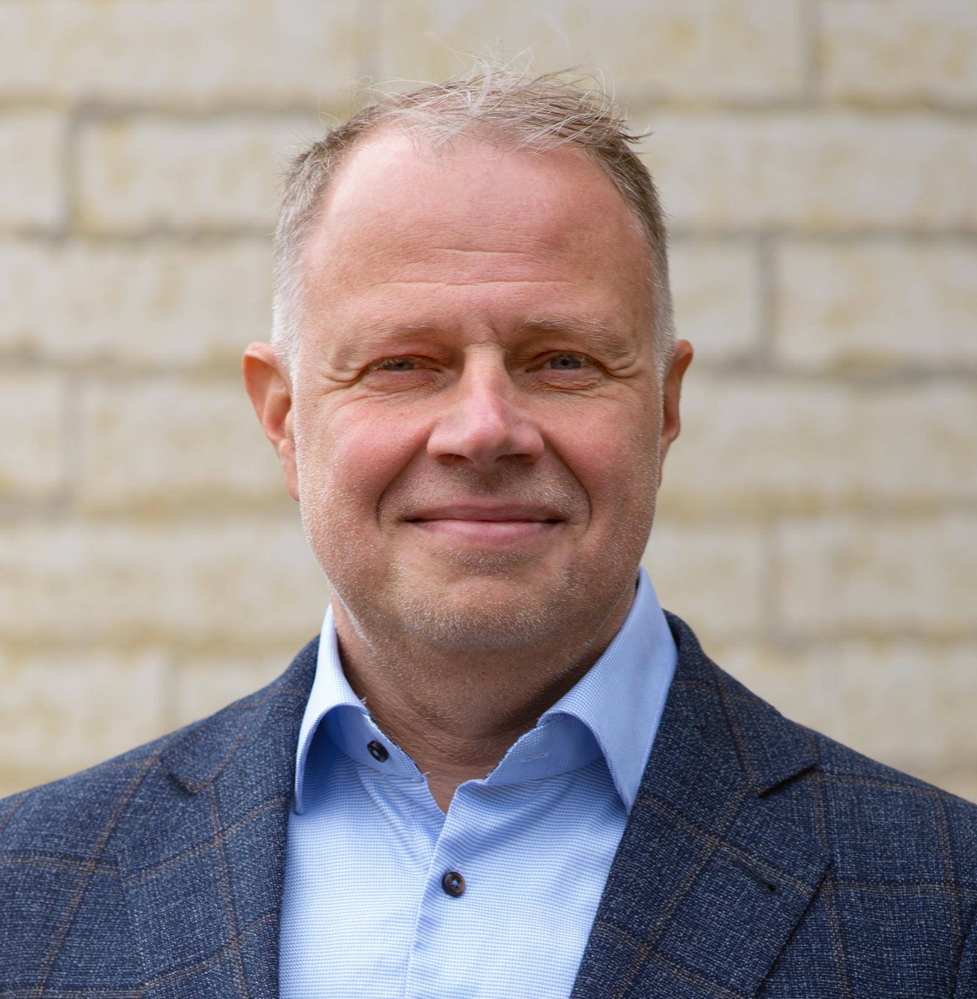

Strategic IT Executive | Digital Transformation Leader | Financial Sector Technologist
I'm Viktor Petermann — a strategic IT executive and transformation leader with 20+ years of experience delivering large-scale digital and business transformations within financial institutions.
My background includes systems engineering, financial services, and enterprise resilience. My work lies at the intersection of structure and strategy, technology and human judgment. I specialize in integration — bridging business and IT, and delivering compliant, resilient, and customer-centric solutions in regulated environments.
I’m known for a systematic approach to building high-performance teams, governance frameworks, and transformation programs across multiple geographies — with a leadership style that adapts to specific demands and team dynamics.
Whether you're here to explore my beliefs, learn about my experience, or connect for potential collaboration — I'm glad you're here.
“The world, to me, is both structure and wonder.”
I was born and raised in Estonia, shaped by a time of transformation — when political systems, economies, and industries were being redefined.
My early career began in the heart of this change, where I faced a foundational challenge: designing and implementing a cross-border Business Continuity and IT Disaster Recovery framework for a regional bank from zero. It was a defining moment — not theoretical, but practical.
That experience taught me something essential: lasting outcomes require a systematic approach — one that connects people, processes, and technology into a unified delivery model. This led me to focus on establishing strong governance and embedding IT Service Management and process-based frameworks (ITIL, CMMI) across organizations.
Over time, my perspective expanded. I moved from a purely technology-driven mindset to a business-focused one — because technology is only as valuable as the problems it solves. Without a deep understanding of customer needs, even the most elegant technical solution can fall short. Technology is the “how,†but the “what†and “why†come from people.
My academic foundation is in IT systems engineering, where I learned that success starts not with configuration, but with clarity of purpose. If you can define the outcome from the customer's perspective (which is the creative part), then everything else — architecture, design, even automation — becomes a matter of structured and systematic translation.
Increasingly, this translation is handled by AI and automated frameworks. But what remains uniquely human is the ability to ask: “Is this what we needed?†and “Does it deliver the value we intended?”
Since then, I’ve led transformations across the Baltics and Nordics — in banking, infrastructure, operations, and strategy. My career has been defined by balancing structure with flexibility, vision with execution, and systems thinking with human insight.
I believe in frameworks — and I believe in the unexpected. I believe in disciplined architecture — and in the intuition that sometimes rewrites it. I believe in the power of systems to drive change — and in the necessity of asking what change is worth driving.
“There are only two ways to live your life. One is as though nothing is a miracle. The other is as though everything is a miracle.”
– Albert Einstein
Sustainable systems need both structure and flow. In every transformation I’ve led, the pattern is clear: start by establishing clarity through central rules, and then distribute ownership to scale and adapt. Whether in IT governance, organizational design, or the history of empires, decentralization without a coherent foundation leads to drift. Alignment first — autonomy after.
Complexity impresses. Simplicity endures. I’ve learned that grasping a few core principles is far more powerful than memorizing endless details. This drives my passion for systems thinking — using mind maps, mental models, and frameworks to organize knowledge and enable clear decisions.
“Any intelligent fool can make things bigger and more complex. It takes a touch of genius — and a lot of courage — to move in the opposite direction.”
– Albert Einstein
Humans are not deterministic. Machines are. I am deeply interested in the limits of artificial intelligence — in its struggle to replicate the “maybe†that defines us. Human thought is shaped not just by inputs, but by context, emotion, intuition, and history. Ambiguity isn’t a flaw — it’s what makes us adaptable, creative, and ethical.
Since the mid-2020s, several large language models such as ChatGPT have passed modern, rigorous variants of the Turing test. But are machines now really able to exhibit intelligent behavior equivalent to that of a human? That “maybe†part — the space between simple yes and no, combined with intention and feeling — is something far harder to reproduce.
📠Tallinn, Estonia
✉️ viktor.petermann@gmail.com
🔗 LinkedIn Profile